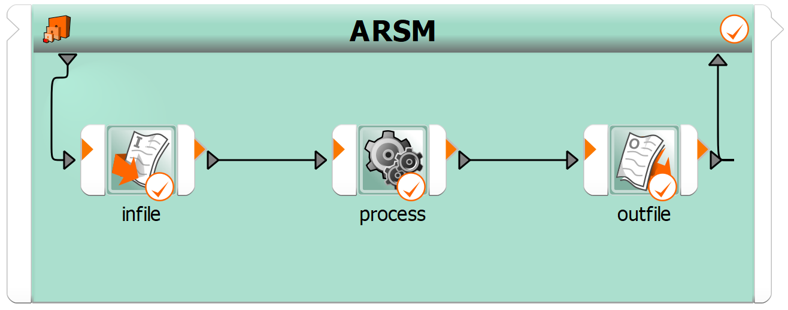

Note
Go to the end to download the full example code.
Ten bar truss#
This example demonstrates how to to create an ARSM ten bar truss flow in batch mode using pyOptiSLang.
First, the workflow is created, properties are set and project is executed. It explains then how you can save the project to a desired location.
Perform required imports#
Perform the required imports.
import os
from pathlib import Path
from ansys.optislang.core import Optislang
import ansys.optislang.core.node_types as node_types
from ansys.optislang.core.nodes import DesignFlow, IntegrationNode, ParametricSystem
from ansys.optislang.core.project_parametric import (
ComparisonType,
ConstraintCriterion,
ObjectiveCriterion,
OptimizationParameter,
)
from ansys.optislang.core.utils import get_osl_exec
example_files_path = Path(os.environ["OSL_EXAMPLES"]) / "00_run_script" / "ten_bar_truss" / "files"
Create optiSLang instance#
Create the optiSLang instance.
osl = Optislang(ini_timeout=60)
print(osl)
Create workflow#
root_system = osl.application.project.root_system
# Create nodes
# ------------
arsm: ParametricSystem = root_system.create_node(type_=node_types.ARSM)
text_input: IntegrationNode = arsm.create_node(
type_=node_types.Parameterize, name="infile", design_flow=DesignFlow.RECEIVE
)
process: IntegrationNode = arsm.create_node(type_=node_types.Process, name="process")
text_output: IntegrationNode = arsm.create_node(
type_=node_types.ETKAsciiOutput, name="outfile", design_flow=DesignFlow.SEND
)
# Setup nodes
# -----------
# Text input - set file path and register locations as parameters
text_input.set_property(
name="FilePath",
value={
"path": {
"base_path_mode": {"value": "ABSOLUTE_PATH"},
"split_path": {"head": "", "tail": str(example_files_path / "ten_bar_truss.s")},
}
},
)
# register locations as parameters
# note: This automatically creates/assigns parameter to the parent system, but parameter properties
# (parameter type, range, distribution ...) cannot be set directly and have to be modified
# afterward, if needed. Another option is to define parameters in parent system beforehand.
for i in range(1, 11):
location = {
"column": 20,
"expandable": True,
"format": r"%18.16lf",
"length": 8,
"line": int(23 + i),
"marker": r"",
"name": f"area{i:02}",
"preferred_format": False,
"stop_at_line_end": True,
"force_integer_as_real": True,
}
text_input.register_location_as_parameter(
location={"input_parameter": location, "type": "input_parameter"},
name=f"area{i:02}",
reference_value={
"kind": {"value": "scalar"},
"scalar": {"real": 10.0, "imag": 0.0},
},
)
# ARSM - Configure parameters
for i in range(1, 11):
arsm.parameter_manager.modify_parameter(
OptimizationParameter(name=f"area{i:02}", reference_value=10.0, range=[0.1, 20])
)
# Process - set properties, input/output files
process.set_property("DistinctWorkingDirectory", False)
slang_executable = get_osl_exec()[1].parent / "slang" / "bin" / "slang"
process.set_property("Command", str(slang_executable))
process.set_property("Arguments", ["-b", "ten_bar_truss.s"])
process.set_property("MaxParallel", 4)
input_files = [
{
"archival": {"value": "default"},
"initial_path": "",
"input_filename": "",
"slot_name": "file_path",
"user_data_1": "",
"user_data_2": "",
"working_filename": "ten_bar_truss.s",
}
]
process.set_property("InputFiles", input_files)
output_files = [
{
"archival": {"value": "default"},
"importance": {"value": "required"},
"remove_on_reset": False,
"slot_name": "outfile_path",
"working_file_regex": "",
"working_filename": "ten_bar_truss.out",
}
]
process.set_property("OutputFiles", output_files)
# Text Output - set reference file, responses
outfile = {
"path": {
"base_path_mode": {"value": "WORKING_DIR_RELATIVE"},
"split_path": {
"head": str(example_files_path),
"tail": "ten_bar_truss.out",
},
}
}
text_output.set_property("File", outfile)
# set response `mass`
# LineReader with repeater settings
line_offset = 1
line_increment = 1
line_repetitions = 1
# TokenReade with repeater settings
token_offset = 0
token_increment = 1
token_repetitions = 1
mass_location = {
"etk_variable": {
"type": "etk_ascii_output_variable",
"variable": {
"base_path": "",
"encoding": "utf-8",
"expression": "",
"file_path": str(example_files_path / "ten_bar_truss.out"),
"id": "mass",
"prefer_signal": False,
"reader": {
"marker": {
"next": {
"marker": {
"repeater": {
"repeater": {
"increment": token_increment,
"max_increment": token_repetitions,
"offset": token_offset,
},
"type": "increment_repeater",
},
"separator": " ",
},
"type": "token_reader",
},
"repeater": {
"repeater": {
"increment": line_increment,
"max_increment": line_repetitions,
"offset": line_offset,
},
"type": "increment_repeater",
},
},
"type": "line_reader",
},
},
},
"file_path": {
"path": {
"base_path_mode": {"value": "ABSOLUTE_PATH"},
"split_path": {
"head": "",
"tail": str(example_files_path / "ten_bar_truss.out"),
},
}
},
}
text_output.register_location_as_response(location=mass_location, name="mass")
# set response `stress``
begin_marker = "Stress element"
end_marker = "Stress element"
# Repeated marker settings
marker_offset = 0
marker_increment = 1
marker_repetitions = 10
# LineReader with repeater settings
line_offset = 1
line_increment = 1
line_repetitions = 1
# TokenReader with repeater settings
token_offset = 0
token_increment = 1
token_repetitions = 1
stress_location = {
"etk_variable": {
"type": "etk_ascii_output_variable",
"variable": {
"base_path": "",
"encoding": "utf-8",
"expression": "",
"file_path": str(example_files_path / "ten_bar_truss.out"),
"id": "stress",
"prefer_signal": False,
"reader": {
"marker": {
"end_search": end_marker,
"end_search_is_regex": True,
"next": {
"marker": {
"next": {
"marker": {
"repeater": {
"repeater": {
"increment": token_increment,
"max_increment": token_repetitions,
"offset": token_offset,
},
"type": "increment_repeater",
},
"separator": " ",
},
"type": "token_reader",
},
"repeater": {
"repeater": {
"increment": line_increment,
"max_increment": line_repetitions,
"offset": line_offset,
},
"type": "increment_repeater",
},
},
"type": "line_reader",
},
"repeater": {
"repeater": {
"increment": marker_increment,
"max_increment": marker_repetitions,
"offset": marker_offset,
},
"type": "increment_repeater",
},
"search": begin_marker,
"search_is_regex": True,
},
"type": "regex_searcher",
},
},
},
"file_path": {
"path": {
"base_path_mode": {"value": "ABSOLUTE_PATH"},
"split_path": {
"head": "",
"tail": str(example_files_path / "ten_bar_truss.out"),
},
}
},
}
text_output.register_location_as_response(location=stress_location, name="stress")
# ARSM - add criteria
arsm.criteria_manager.add_criterion(
ObjectiveCriterion(name="obj", expression="mass", criterion=ComparisonType.MIN)
)
arsm.criteria_manager.add_criterion(
ConstraintCriterion(
name="c",
expression="max(abs(stress))",
criterion=ComparisonType.LESSEQUAL,
limit_expression="25000",
)
)
# Connect nodes
# -------------
text_input_odesign = text_input.get_output_slots(name="ODesign")[0]
text_input_opath = text_input.get_output_slots(name="OPath")[0]
process_idesign = process.get_input_slots(name="IDesign")[0]
process_ipath = process.get_input_slots("file_path")[0]
text_input_odesign.connect_to(process_idesign)
text_input_opath.connect_to(process_ipath)
process_odesign = process.get_output_slots("ODesign")[0]
process_path = process.get_output_slots("outfile_path")[0]
text_output_idesign = text_output.get_input_slots(name="IDesign")[0]
text_output_ipath = text_output.get_input_slots(name="IPath")[0]
process_odesign.connect_to(text_output_idesign)
process_path.connect_to(text_output_ipath)
Optionally save project#
If you want to save the project to some desired location, uncomment and edit these lines:
dir_path = Path(r"<insert-desired-location>")
project_name = "ten_bar_truss_workflow.opf"
osl.application.save_as(dir_path / project_name)
Run workflow#
Run the workflow created in previous steps.
osl.application.project.start()
osl.application.save()
Stop and cancel project#
Stop and cancel the project.
osl.dispose()
View generated workflow#
This image shows the generated workflow.
{kind=link}